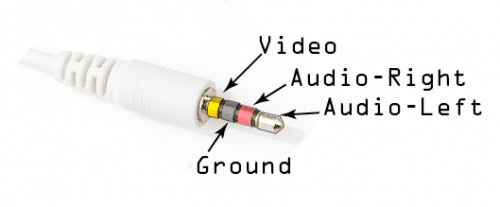

モニター
Monitor
In the spirit of keeping things small, CHIP packs all the audio and video into a small TRRS (Tip-Ring-Ring-Sleeve) connector. Built-in video output is restricted to standard composite video resolution of 640x480. (Higher resolutions can be achieved with the upcoming VGA and DVI output accessories.)
CHIPは「物事は小さく保つ」の精神に則って、小さなTRRSコネクタ(Tip-Ring-Ring-Sleeve)に全てのオーディオとビデオをパックしています。 内臓ビデオ出力は、標準コンポジットビデオ解像度である 640x480 に制限されています。 （いずれ登場するVGAとDVI出力のアクセサリーでより高い解像度を達成できるでしょう。）
Here's what the other end of the cable looks like, attached to a monitor with stereo audio inputs (red and white) and the composite video plug, moved so you can see the label on the monitor:
ケーブルのもう一端は次のようになっており、ステレオオーディオ入力（赤と白）とコンポジット端子をモニターに接続すると、モニター上を動くラベルを確認できるようになります。

TRRS端子について
About the TRRS Connector
CHIP comes with a 1/8" (3.5mm) Tip-Ring-Ring-Sleeve (TRRS) jack, capable of carrying stereo audio, and either composite video out, or microphone in.
CHIPには、1/8"(3.5mm) TRRS(Tip-Ring-Ring-Sleeve)ジャックが付属しており、ステレオオーディオと、コンポジットビデオ出力かマイク入力のいずれかを運ぶ事ができます。

This is a fairly common port, but there are a few different arrangements of the conductors, so not all cables are equal. Fortunately, CHIP uses the same conductor arrangement as Pi, Zune, and iPod audio/video cables, so the most common "mini to RCA A/V" cables should work just fine.
これはかなり一般的なポートです。 少し電線配置の異なる構成のものもありますが、そうでないケーブルは全て同じです。 幸いな事に、CHIPはRaspberryPiやZune、iPodオーディオ/ビデオケーブルと同じ電線配置を使用しているので、大抵の一般的なmini-RCA A/Vケーブルはうまく動作するはずです。
Some cables will route signals a bit differently, using the Red RCA cable for Video instead of Yellow. If video out isn't working through the yellow cable, see if red works. If not, your cable may be a version that's arranged in a way that it just won't work with CHIP:
- yellow : video
- red : stereo audio right channel
- white : stereo audio left channel
ケーブルによっては経路信号が少し異なるので、ビデオ端子には赤ではなく黄色のRCAケーブルを使用します。 黄色ケーブルを使ったときにビデオ出力が機能しない場合は、赤ケーブルを使用すれば上手くいくかもしれません。 そうでないなら、そのケーブルはCHIPでは動作しない配線のものなのでしょう。
- 黄: ビデオ
- 赤: 右ステレオオーディオ・チャンネル
- 白: 左ステレオオーディオ・チャンネル
The conductors on the TRRS plug are arranged like this:
TRRS端子の導体は、次のように配置されています：

If you want to learn even more about TRRS connectors and the general lack of standardization with them, this page has even more details.
TRRS端子についてや、彼らの標準化の全体的な不足について、さらに多く学びたい場合は、このページはさらに多くの情報を持っています。
NTSC か PAL
NTSC or PAL
The composite video format is NTSC by default. If you need to hook up to a monitor that only uses a PAL signal, you'll need to change that at u-boot time. First, connect to CHIP with a UART cable. Then power up CHIP, and press a key on the keyboard to boot into u-boot mode to change the environment variable manually.
コンポジットビデオのフォーマットは、デフォルトではNTSCになっています。
PAL方式だけを使用してモニタと接続する必要がある場合、u-bootモードでそれを変更する必要があります。
はじめに、UARTケーブルでCHIPに接続します。
CHIPが起動した後、手動で環境変数を変更するには、u-bootモードで起動するように、キーボードのキーを押してください。
printenv video-mode
setenv video-mode (mode data)
saveenv
reset
where mode data can be, for NTSC and PAL respectively:
mode data は、それぞれNTSC、PALとすることが出来ます。
setenv video-mode sunxi:640x480-24@60,monitor=composite-ntsc,overscan_x=40,overscan_y=20
setenv video-mode sunxi:720x576-24@50,monitor=composite-pal,overscan_x=40,overscan_y=20